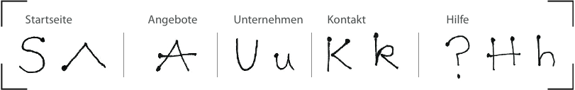
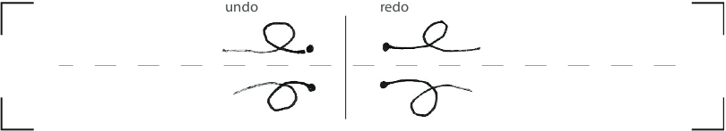
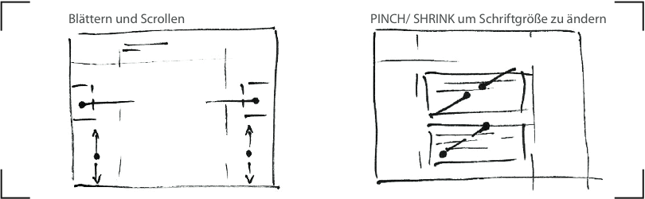

Hilfe
Die vorliegende Hilfe beschreibt die implementierten Gesten in diesem Anwendungsprototyp und legt deren Definition mit GeForMT offen.Access Keys: Symbolische Gesten als Schnellzugriff auf Seiten

S = 1F(SEMICIRCLE_SW_CCW(#content),LINE_SE(#content),SEMICIRCLE_SW_CW(#content))
|1F(SEMICIRCLE_S_CCW(#content),SEMICIRCLE_S_CW(#content)) : OFF
^ = 1F(LINE_NE(#content),LINE_SE(#content)) : OFF
A = 1F(LINE_NE(#content),LINE_SE(#content));1F(LINE_E(#content)) : OFF
U = 1F(LINE_S(#content),SEMICIRCLE_E_CCW(#content),LINE_N(#content))
|1F(LINE_S(#content),SEMICIRCLE_W_CW(#content),LINE_N(#content))
|1F(LINE_S(#content),SEMICIRCLE_E_CCW(#content),LINE_N(#content),LINE_S(#content)) : OFF
K = ASIDE[1F(LINE_S(#content));1F(LINE_SW(#content),LINE_SE(#content))]
|1F(LINE_S(#content),LINE_S(#content),LINE_S(#content),LINE_N(#content),LINE_N(#content),
CIRCLE_W_CW(#content),LINE_SE(#content)) : OFF
? = AMONG[1F(SEMICIRCLE_SE(#content),LINE_S(#content));1F(POINT(#content))] : OFF
H = 1F(LINE_S(#content),LINE_S(#content),SEMICIRCLE_E_CW(#content))
|1F(LINE_S(#content));1F(LINE_S(#content));1F(LINE_E(#content)) : OFF
Adaption der Browser-Navigation: Vor- und Zurückgehen in der Browser-History

undo = 1F(LINE_W(#content),CIRCLE_S_CW(#content),LINE_W(#content))
|1F(LINE_W(#content),CIRCLE_N_CCW(#content),LINE_W(#content)) : OFF
redo = 1F(LINE_E(#content),CIRCLE_S_CCW(#content),LINE_E(#content))
|1F(LINE_E(#content),CIRCLE_N_CW(#content),LINE_E(#content)) : OFF
Navigation: Blättern, Scrollen und Skalieren

swipeToPreviousPage = 1F(LINE_E(div#previousPageLabel)) : ON
swipeToNextPage = 1F(LINE_W(#nextPageLabel)) : ON
scrollPage = MOVE(body) : ON
scaleFontDown = JOIN[2F(LINE(.section))] : OFF
scaleFontUp = SPLIT[2F(LINE(.section))] : OFF